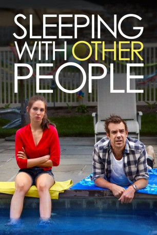

#4598 Sleeping with Other People
 
 IMDB-Wertung: 6.5 / 10
IMDB-Wertung: 6.5 / 10  Tomatometer: 64
Tomatometer: 64  Metascore: 0
Metascore: 0 
Lainey (Alison Brie) und Jake (Jason Sudeikis) lernen sich kennen, als Lainey mit voller Wucht im College an eine Tür des Studentenwohnheims hämmert und lauthals ihre Entrüstung mitteilt. Jake zieht sie in sein Zimmer und verführt sie mit seinem Schlauberger-Humor. Noch am selben Abend verbringen sie eine gemeinsame Nacht auf dem Dach des Wohnheims. Zwölf Jahre später wird Jake aufgrund seiner ewigen Untreue von der neuesten einer langen Reihe von Exfreundinnen abserviert, während auch Lainey ihrem Freund beichtet, mit jemand anderem zu schlafen. So begegnen sich die beiden bei einem Treffen für Sexsüchtige und beginnen eine platonische Freundschaft. Ihnen wird klar, dass sie beide irgendwie in ihren College-Vergangenheit und ihren Träumen festgefahren sind.
Jahr: 2015
Dauer: 101 Minuten
FSK: 12
Land: USA Studio: IFC FilmsTonspuren: DTS - ,
Untertitel: Deutsch,
Auflösung: 1080p (1920x800) Größe: 4874 MB
Genre: Komödie, Drama, Liebe
Regisseur: Leslye Headland
Drehbuch: Bryan Fuller
Soundtrack:
Darsteller:
 Alison Brie als Lainey
Alison Brie als Lainey Jason Sudeikis als Jake
Jason Sudeikis als Jake Jordan Carlos als R.A.
Jordan Carlos als R.A. Margarita Levieva als Hannah
Margarita Levieva als Hannah Adam Brody als Sam
Adam Brody als Sam Michael Cyril Creighton als Attentive Waiter
Michael Cyril Creighton als Attentive Waiter Billy Eichner als SLAA Speaker
Billy Eichner als SLAA Speaker Jason Mantzoukas als Xander
Jason Mantzoukas als Xander Amanda Peet als Paula
Amanda Peet als Paula- Victoria Frings als Nurse
 Adam Scott als Matthew
Adam Scott als Matthew Natasha Lyonne als Kara
Natasha Lyonne als Kara Andrea Savage als Naomi
Andrea Savage als Naomi- Anna Margaret Hollyman als Renee
 Carlo Alban als Microcenter Employee
Carlo Alban als Microcenter Employee- Remy Nozik als George
- Jamil Mena als Big Dude
 Marc Blucas als Chris
Marc Blucas als Chris- Austin Ku als Pho Grand Waiter
 Katherine Waterston als Emma
Katherine Waterston als Emma- Skylar Gaertner als Oliver
- Brian Berrebbi als Sobvechik's Lawyer
- Athena Alexis als Crista , uncredited
 Candice T. Cain als Soccer Mom , uncredited
Candice T. Cain als Soccer Mom , uncredited- Ricky Garcia als Doorman , uncredited
- Chetna Goel als Party Kid , uncredited
- Megan Guinan als Alice , uncredited
 Rosemary Howard als Nurse / Pub Goer , uncredited
Rosemary Howard als Nurse / Pub Goer , uncredited Diane Kimbrell als Orgasm Workshop Attendee , uncredited
Diane Kimbrell als Orgasm Workshop Attendee , uncredited Will MacAdam als Senior Orgasm Workshop Attendee , uncredited
Will MacAdam als Senior Orgasm Workshop Attendee , uncredited- Matthew Macedo als Henry , uncredited
 Doris McCarthy als Wealthy Guest , uncredited
Doris McCarthy als Wealthy Guest , uncredited- Daniella Pineda als Danica , uncredited
 Leetopher Scott als Restaurant Waiter , uncredited
Leetopher Scott als Restaurant Waiter , uncredited Nancy Ellen Shore als Holiday Shopper , uncredited
Nancy Ellen Shore als Holiday Shopper , uncredited- Chris Skeries als Pedestrian , uncredited
- Gail Yudain als Shopper , uncredited
- Charles Cain als Helmet Kid
- Margaret Odette als Thea
- Sawyer Shipman als Lyle
- Mitchell Green als Police Officer
- Jeff Mantel als Detective
- Michael Delaney als Jake's Lawyer
- Julie E. Davis als Party Guest , uncredited
- Donovan Edmondson als Blue Soccer Kid , uncredited
- Isaac Galizio als Maroon Soccer Kid , uncredited
- Joe Loffreno als Uber Wealthy Party Guest , uncredited
- Ryan J. Murphy als Blue Soccer Kid , uncredited
- Casey Nadzam als Party Kid , uncredited
- Kiera Romond als Kindergarten Kid , uncredited
Datei: X:\2015(N-Z)\Sleeping with Other People (2015, FSK12, 1920x800).mkv seit 20.10.2016
Festplatte: HD 2015(A-Z)
 Es gibt insgesamt 161 Filme in der Gruppe '2015(N-Z)'
Es gibt insgesamt 161 Filme in der Gruppe '2015(N-Z)'